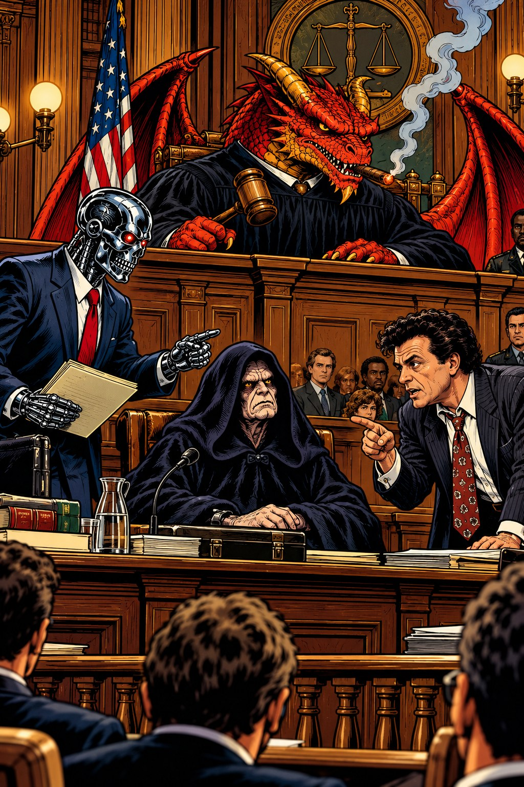

For twenty-one years the league has whispered that The Machines rig it. We pulled every itemised trade from 2021 to 2025, checked the counts against the league register back to 2016, and priced every asset at the season it moved in. Here is what it says.
There is a theory of the Skirt Chasers Fantasy League that has survived longer than most of the franchises in it. The theory is simple and it is repeated, in some form, every single autumn: The Machines cheat. The Machines are the Evil Empire. He preys on the weak owners, he collects the rebuilders like toll booths, and the rest of the league is left to split the scraps he does not want. It is a good story. It has a villain, it has victims, and it explains — cleanly, comfortably — why the same team keeps ending up on top. This newsroom decided to do the one thing nobody arguing about it had ever bothered to do. We pulled the receipts.
The record itself is not in dispute, and it is the reason the theory exists at all. The Machines are 215-63 across the tracked era — a .773 winning percentage in a league where the next best side to have gone the full twenty-one seasons, The Beaver Eaters, sits on .590. Twenty playoff appearances in twenty-one seasons — League Legacy's register, which is the league's own. Four championships, nine runner-up finishes, and an all-play record that reads like a typo until you work out what it counts. Score every week he has played against all fifteen other teams in the league that week, not just the one he was drawn against, and he is 3,198-944-28: 4,170 notional games, .770. The schedule has not been doing him favours. He beats the room. You do not have to like it to respect it, and most of the league has chosen the first option. When a team is that good for that long, the human brain does not reach for "well-run." It reaches for "rigged." That instinct is the entire case for the prosecution, and it is worth taking seriously — so we did.
So let us state the charge properly, because the league rarely does. Nobody here seriously thinks there is a conspiracy — a conspiracy needs two guilty parties and the accusation is always aimed at one. The charge is predation: that The Machines win because he works the owners who do not know what their own players are worth, that he finds the naive and the checked-out and the rebuilding and takes the good half of the deal while they thank him for it. That is a sharper accusation than cheating and a harder one to answer, because it does not require anybody to break a rule. It only requires one man at the table to be paying more attention than the other. If it is true it leaves a fingerprint: the same soft counterparties, over and over, and a ledger that runs his way when it is priced.
So we mapped every trade in the itemised ledger — 250 deals from 2021 to 2025, sixty-five of them with The Machines on one side of the table. 2021 is not where the league became a dynasty league; it has always been one. 2021 is where the receipts start. The league's own trade register goes back to 2016 and has him in 117 deals across eleven seasons, so both records were counted and set against each other: over the five years they share they are four deals apart on him, and seven of the sixteen franchises come out identical. But the register records only how many, not who or what. The players and the picks exist from 2021, so 2021 is where a price can be put on anything — and five seasons is the window that bears on this league anyway. These are the deals whose players are on these rosters now. Older ones are history, and this is an audit.
The first thing the ledger does is refuse to clear him. His two most frequent partners are level on fourteen deals each: Lil Chops and Wookie Leaks. Between them that is twenty-eight of his sixty-five deals — about 43 per cent of everything he has done — and both of them come from the bottom of the all-time table. Wookie Leaks have the worst winning percentage of any side still in this league, 51-97 in eleven seasons, .345. Lil Chops are third-worst of the sixteen, at 40-56. If you wanted to draw the prosecution case as a chart, that is the chart. We are not going to pretend otherwise, because it is the first thing in the file.
| Partner | Deals | All-time | Playoffs | Titles | |
|---|---|---|---|---|---|
| Lil Chops | 14 | 40-56 | 3 | — | |
| Wookie Leaks | 14 | 51-97 | 0 | — | |
| Heavy Hitters | 8 | 127-151 | 10 | 1 | |
| Powers of Pain | 8 | 144-134 | 10 | 5 | |
| The Beaver Eaters | 4 | 164-114 | 15 | — | |
| Pork Chop Express | 4 | 61-61 | 5 | — | |
| Killer Klowns | 2 | 94-145 | 1 | 1 | |
| Guido Haters | 2 | 119-120 | 12 | 1 | |
| Smoke Dragons | 2 | 138-140 | 11 | — | |
| Big Blue | 2 | 163-115 | 13 | 4 | |
| Still The Cream | 2 | 122-156 | 9 | — | |
| New World Order | 2 | 161-117 | 17 | 1 | |
| Hairy Gumbas | 1 | 120-158 | 8 | — | |
| Master Jet-I | 1 | 84-103 | 5 | 1 |
The second thing the ledger does is refuse to convict him. Those sixty-five deals are spread across fourteen of the league's sixteen franchises. Twenty-seven of them were with sides that have made the playoffs ten times or more. Twenty-five were with sides that have won the thing. Eight of them were with Powers of Pain, who own five championships — more than The Machines do. A man who only hunts the naive does not spend his summers across the table from the champions. That is a man doing business with the entire building, including the parts of it that can beat him.
Both things are true at once, and the theory cannot hold both. Predation needs a small number of soft marks. What the ledger shows is the whole building with two doors that get used more than the others — and in a dynasty league, those two doors have a name. The rebuilders are not the contender's victims; they are the contender's trading partners by design. A team going nowhere in November has one asset a title team wants and one thing it needs, and the title team is the only reliable buyer in the building. The sides who trade with The Machines most are the sides with the most reason to.
And the direction of travel is the opposite of the one the story tells. Across those sixty-five deals The Machines took in fifty players and gave up seventy-two. They took in fifty-four picks and gave up forty-one. By the count, the Evil Empire is a net seller of players and a net buyer of draft capital — which is not what hoovering up the league's veterans looks like. It is what a rebuild looks like, run every year, by a team that keeps winning while it runs it.
He is not even the busiest man in the market. Over the same five seasons Pork Chop Express were a party to sixty-eight deals and The Machines to sixty-one. And the rate barely moves. The league's trade register has him at 13, 11, 13, 12 and 12 deals across those five seasons — never fewer than eleven, never more than thirteen — while the league's own total over the same five years went 52, 59, 53, 41 and 36 — twenty-three deals between its busiest summer and its quietest. The market around him fills up and empties out. He does his eleven to thirteen and goes back to work. Whatever he is doing, he is doing it in public, on a schedule, with everyone.
| Franchise | 16 | 17 | 18 | 19 | 20 | 21 | 22 | 23 | 24 | 25 | 26 | All |
|---|---|---|---|---|---|---|---|---|---|---|---|---|
| Wookie Leaks | 12 | 19 | 14 | 19 | 21 | 5 | 16 | 11 | 8 | 10 | 2 | 137 |
| Pork Chop Express | — | — | 11 | 22 | 19 | 12 | 21 | 14 | 13 | 8 | 8 | 128 |
| New World Order | 13 | 22 | 11 | 8 | 8 | 16 | 12 | 9 | 4 | 3 | 11 | 117 |
| The Machines | 4 | 14 | 9 | 12 | 9 | 13 | 11 | 13 | 12 | 12 | 8 | 117 |
| Powers of Pain | 7 | 4 | 8 | 17 | 22 | 15 | 10 | 9 | 6 | 7 | 5 | 110 |
| Lil Chops | — | — | — | 17 | 20 | 7 | 8 | 9 | 14 | 11 | 9 | 95 |
| Master Jet-I | 8 | 7 | 4 | 8 | 13 | 10 | 6 | 7 | 3 | 5 | 2 | 73 |
| Smoke Dragons | 2 | 1 | 5 | 9 | 4 | 8 | 9 | 11 | 2 | 2 | 2 | 55 |
| Heavy Hitters | 3 | 6 | 3 | 5 | 4 | 5 | 6 | 1 | 7 | 4 | 5 | 49 |
| Still The Cream | 2 | 9 | 7 | 5 | 3 | 4 | 6 | 7 | 2 | 2 | 1 | 48 |
| The Beaver Eaters | 5 | 1 | 2 | 5 | 5 | 4 | 5 | 4 | 1 | 1 | 1 | 34 |
| Killer Klowns | — | — | 4 | 5 | 4 | 1 | 4 | 5 | 3 | 3 | — | 29 |
| Big Blue | — | 2 | 2 | 2 | 1 | 3 | 3 | 4 | 5 | 2 | 2 | 26 |
| Horse Collars | 1 | 1 | 1 | 8 | 6 | — | 1 | — | 2 | 2 | — | 22 |
| Guido Haters | 4 | 1 | 2 | 5 | — | — | — | 2 | — | 2 | — | 16 |
| Hairy Gumbas | — | 3 | 1 | 3 | 3 | 2 | 1 | 1 | — | — | 2 | 16 |
| The league | 36 | 56 | 43 | 75 | 69 | 52 | 59 | 53 | 41 | 36 | 29 | 549 |
Does he win the deals? More than he loses, and by less than the theory needs. Priced at the season each trade was made in — August values of that year, picks on the same dollar board the Trade Court grades on, no hindsight anywhere — The Machines are 15-6 across the sixty-four two-team deals in the ledger. But the number that says more is the third one: forty-three of those sixty-four finish inside twelve dollars either way. 67 per cent of everything he has done is, by the board, a fair trade. His median deal is worth $3 to him. That is the shape of a man making a great many ordinary trades, not a man running a protection racket.
| Differential to The Machines | Deals | |
|---|---|---|
| worse than −$100 | 0 | |
| −$100 to −$50 | 1 | |
| −$50 to −$12 | 5 | |
| level (within $12) | 43 | |
| $12 to $50 | 15 | |
| $50 to $100 | 0 | |
| better than $100 | 0 |
And the misses are not abstract. Some of them walked back through the door. JuJu Smith-Schuster went to Lil Chops in 2021 and was bought back from Heavy Hitters in 2024, three years later. Trey McBride went to Killer Klowns in 2023 and was bought back from Lil Chops in 2025, two years later. Five players in this ledger have made that round trip. It is not the paperwork of a man with the game in a fix. It is the paperwork of a very good manager who is still, occasionally, human — which is the most exculpatory evidence we found.
So why does the accusation never die? Because it does useful work for the fifteen other teams. "The Machines cheat" is a more bearable explanation than "The Machines are better than me at the one thing we all show up to do." The persecution complex that comes back off that side of the chat — everyone's teaming up on me, they gang up because I'm the best — is not entirely paranoia; the chat does organize against him, does root against him, does treat a deal that helps The Machines as a threat to the republic. But that is a tax the league levies on excellence, not evidence of a crime. They gang up on him because he keeps winning. He keeps winning because he is good.
This newsroom has now read every deal in the five-year ledger, priced every asset at the season it moved in, counted every partner, and checked the counts against the league's own register going back eleven years. There is no ring of soft touches. There is a concentration, and an explanation for the concentration that the concentration itself supports. There is a market, open every summer, and he does not own it: Pork Chop Express were a party to more of its deals over the same five seasons than he was, and he does not clear it either, because most of what he does in it comes out level. And there is a room that has decided, for twenty-one years, that whatever he is doing instead must be against the rules.
So the verdict of the ledger is not close, and it is not the one the league wants either. On the charge of cheating: not guilty — there is nothing in the file to prosecute. On the charge of preying on the ignorant and the naive: not guilty, and it is the ledger that acquits him, not this desk. Twenty-five of his deals were done with sides who have won this league; forty-three of his sixty-four priced deals come out level; he is a net seller of players in the ones that do not. A predator does not come out level in 67 deals out of every hundred. He does not have the most championships either; Powers of Pain have five to his four. What he is guilty of is narrower than the charge and worse for everybody else: the best record anybody has put together here, .773 against .590 for the next side to go the distance, and twenty playoff appearances in twenty-one seasons on the league's own register, three more than anyone else has managed. He is beaten in his own trade ledger six times out of sixty-four and he finishes above you anyway. Some empires are built in the dark. This one was built in the group chat, in broad daylight, one ordinary deal at a time, while everybody watched and nobody could stop it.
The SCFL has always been a dynasty league. 2021 is not where the market opened — it is where the paperwork starts. Two records were used here and they reach back different distances. The league’s trade register counts deals from 2016, eleven seasons, and says how many each franchise did and when. The itemised ledger says what was in them — which players, which picks, which way — and it starts in 2021. Only the second one can be priced, so the priced window is 2021–2025.
Five seasons is also the window that bears on anything. These are the deals whose players are on these rosters, in this league, this Sunday. If anybody still has itemised trades from before 2021 — the official chat, a spreadsheet, screenshots — send it and this desk will price them too.
The current season is left out entirely. It is twenty-nine deals old and counting, and a part-season in a table of whole ones is a misleading number dressed as a complete one.
Every figure in this piece is computed from files in the newsroom repository and the piece is regenerated from them rather than typed, so the sentence and the number beside it cannot disagree.
The ledger. The itemised Obvibase export: 250 deals from 2021 to 2025, with multi-team legs consolidated and pass-through assets netted out, so a middleman is credited only with what he kept.
Two sources, cross-checked. A reconstruction cannot check itself, so the itemised ledger was counted against the league’s own register, franchise by franchise and season by season. Over 2021–2025 the two sources put 250 deals and 241 on the table; seven of the sixteen franchises agree exactly, and the largest gap anywhere is two deals in one season. The Machines’ own rows differ by four deals across the five years. Any figure in this piece that the register will not back is not in this piece.
And the gap between them is not a disagreement. The register numbers every trade in it, in order, and never reuses a number. Reading those numbers rather than the rows shows twenty-two trades entered over the years and later deleted — voided, reversed, or entered twice. Twelve of them fall inside this window, which is where the ledger’s extra nine deals come from: it was built from an earlier pull and still carries trades the register has since dropped. Season by season the deletions cover the gap with nothing left over. The ledger is a little out of date. It is not wrong, and those are very different things.
Players are priced from the DynastyProcess superflex board, taken from the August snapshot of the season the trade was made in. Not today’s. A player who became a star in 2024 is priced in a 2021 trade at what he was worth in 2021, because the question is whether the deal was fair when it was made, not whether it aged well.
Picks are priced from the league’s own pick curve, calibrated against 235 real SCFL trades. A pick with a known slot is worth what the curve says. A future pick has no slot yet, so it is priced at the average of its round and discounted for every year of waiting.
| Pick | 2025 | 2026 | 2027 | 2028 |
|---|---|---|---|---|
| 1 | 100.0 | 88.0 | 77.4 | 68.1 |
| 2 | 86.0 | 75.7 | 66.6 | 58.6 |
| 3 | 76.0 | 66.9 | 58.9 | 51.8 |
| 4 | 56.0 | 49.3 | 43.4 | 38.2 |
| 5 | 50.0 | 44.0 | 38.7 | 34.1 |
| 6 | 46.0 | 40.5 | 35.6 | 31.3 |
| 7 | 43.0 | 37.8 | 33.3 | 29.3 |
| 8 | 41.0 | 36.1 | 31.8 | 27.9 |
| 9 | 39.0 | 34.3 | 30.2 | 26.6 |
| 10 | 38.0 | 33.4 | 29.4 | 25.9 |
| 11 | 33.0 | 29.0 | 25.6 | 22.5 |
| 12 | 30.0 | 26.4 | 23.2 | 20.4 |
| 13 | 27.0 | 23.8 | 20.9 | 18.4 |
| 14 | 24.0 | 21.1 | 18.6 | 16.4 |
| 15 | 21.0 | 18.5 | 16.3 | 14.3 |
| 16 | 19.0 | 16.7 | 14.7 | 12.9 |
| a 1st, slot unknown | 45.6 | 40.1 | 35.3 | 31.0 |
| a 2nd, slot unknown | 10.0 | 8.8 | 7.7 | 6.8 |
The two boards are on one scale. Players and picks are priced by different curves, built separately and years apart, and they do not arrive in the same units: the pick curve puts the 1.01 at 1,000 where the player board puts it at 100. Nothing can be added until that is settled, so the curve is divided by ten and both boards now read in the same dollars — the 1.01 at $100, the best player in the league at $127. The check that it is right is independent: on this scale the average first-round pick comes out at $45.60, and the league’s Trade Court, calibrated on its own against real SCFL deals, puts it at $48. Two boards built apart agreeing inside five per cent is what makes a dollar in this article mean one thing.
A win is a net above $12 on that board, which is the Trade Court’s own threshold, and anything inside it is called level. What is left out: five three-team deals, whose receipts do not say which side each asset came from, and seven assets league-wide — team defences, mostly — that carry no price and count as zero.
What is deliberately not here. No league ranking for who trades best. The order moves by several places depending on nothing more than what an unknown future second is assumed to be worth, and a table an assumption can reshuffle is not a finding. No claim about how a trade aged, either: this board does not know, and neither did anybody at the table.